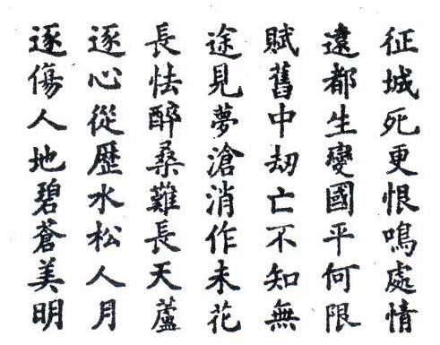

Chương XVI

ó nhiều người tưởng Việt Nam Quốc Dân Đảng của chúng tôi là một ngành của Việt sam Quốc Dân Đảng do cụ Phan Bội Châu lập lên khi cụ còn ở Tầu.
Kỳ thực thì khi ở Tầu, cụ Phan mới có cái chương trình lập lên Việt Nam Quốc Dân Đảng mà thôi. Còn sự thành lập của đảng chúng tôi, thì như trên tôi đã kể. Tuy vậy, bảo Đảng chúng tôi là con đẻ tinh thần của cụ cũng chẳng có sao! Và bằng như thế, chúng tôi còn tặng cụ cái tên danh dự chủ tịch, và mong cụ giúp Đảng hai việc.
Một là nhờ cụ đứng ra, đem oai quyền đạo đức mà thống nhất các đảng lại.
Hai là nhờ cụ về phương diện ngoại giao, vì cụ có quen thân với các yếu nhân ngoại quốc: Khuyển Dưỡng Nghị, Cung Kỳ Di Tàng ở Nhật; Tưởng Giới Thạch, Uông Tinh Vệ ở Tầu.
Vì vậy hôm mồng 2 tháng Mười 1928, Tổng bộ đã cử ông Đặng Đình Điền vào Huế, để đạo đạt ý Kiến Anh em với cụ.
Hai ông già gặp nhau rất là vui vẻ. Cụ Phan xin nhận là đảng viên của Đảng và nói:
- Tôi già yếu thật, nhưng nếu còn có thể giúp ích được việc gì cho tổ quốc, thì tôi xin hết sức phục tòng mệnh lệnh của anh em!
Cuối cùng, cụ giao cho ông Đặng tấm danh thiếp, phía sau đề bốn chữ “khả dĩ đoạn kim”, phòng khi Đảng có phái người vào cứ thì cầm thiếp ấy làm tin.
Đến cuối năm, ngày mồng 9 tháng 12, trong kỳ hội nghị bầu Tổng bộ mới, nhân có việc định cử phái bộ ngoại giao sang Nhật và sang Tầu, Đảng liền cắt anh Học và tôi vào xin cụ viết cho mấy bức thư giới thiệu.
Tổng bộ lần này là Tổng bộ thứ ba, tổ chức theo điều lệ mới gồm có hai uỷ viên hội: Lập pháp và chấp hành. Bên lập pháp, anh Nguyễn Khắc Nhu, hiệu Song Khê và tục gọi Xứ Nhu làm chủ tịch. Anh Học làm phó chủ tịch. Bên chấp hành thi anh Nguyễn Thế Nghiệp đứng đầu. Vì chương trình hành động, thêm ra một thời kỳ thứ tư là thời kỳ kiến thiếl: Sau khi cách mạng thành công, đảng sê tổ chức một chính phủ cộng hoà, theo chủ nghĩa dân chủ xã hội.
Nhưng tôi hãy nói tiếp theo về việc cụ Phan Bội Châu.
Được lệnh anh em cử, tôi hẹn với anh Học mồng bốn Tết năm Kỷ Tỵ (1929) sê gặp nhau ở Hà Nội, rồi rẽ vào Huế. Khi tới Hà Nội, tôi được tin tên Ba Gianh bị giết.
Tôi đi tìm anh Học, mới biết đó là thủ đoạn của anh em trong Ám sát đoàn. Tôi bảo anh Học:
- Nếu vậy thì một mình tôi đi Huế thôi. Mệnh lệnh Đảng, cố nhiên phải phục tòng. Thế nhưng một mình tôi đi cũng đủ. Vì rằng đi thì đi, chớ tôi chắc thế nào dọc đường cũng bị bắt. Thế như tôi bị bắt thì được, chứ anh bị bắt thì không được! Đảng cần đến anh hơn tôi!
Anh Học cho là phải. Chúng tôi liền uống với nhau một bữa rượu tiễn hành. “Ai hay vĩnh quyết là ngày sinh ly”. Đêm hôm ấy, hai tôi đã cùng nhau chuyện trò, cười, khóc suốt đêm. Và từ đấy, tôi không còn được gặp Học ở trong đời nữa!
Khi tôi vào Huế, tìm vào đến nhà cụ Phan thì người nhà cho biết cụ ra chơi Cửa Thuận. Tôi vơ vẩn ở bờ sông Hương, ngóng thuyền cụ trở về. Ánh trăng soi sáng những bông lau, bông sậy nở dọc hai bờ sông cho tôi một cảm giác mơ bồ… Tôi làm một bài thơ đề là “Qua Huế, thăm cụ Phan Sào Nam, không gặp, có cảm”. Hôm sau tôi đã đem bài thơ ấy đưa trình cụ:
Nguyên văn bài thơ:

Diễn âm
Trục trặc trường đồ phú viễn chính,
Thương tâm khiếp kiến cựu đồ thành!
Nhân tòng tuỳ mộng trung sinh tử!
Địa lịch tang thương kiếp biến canh!
Bích thuỷ nạn tiêu vong quốc hận!
Thương tùng trưởng tác bất bình minh!
Mỹ nhân thiên mạt trí hà xứ
Minh nguyệt, lô hoa, vô hạn tình!
Dịch nghĩa
Tất tả đường trường dám quản công!
Thành xưa nhìn lại dục đau lòng!
Sống say, chết mộng người bao kiếp
Biển đổi, dâu thay đất mấy vòng!
Nhục rửa sạch đâu, sông lộn sóng
Uất còn chứa mãi gió gào thông!
Cuối trời đâu tá con người đẹp?
Thổn thức ngàn lau ánh nguyệt lồng!
Cụ gặp tôi, tỏ vẻ rất vui mừng.
Trò chuyện suốt một buổi trời, đức độ của cụ khiến lòng tôi chứa chan cảm động. Cảm động nhất là đến bữa ăn, trên mâm chỉ có một đĩa lòng lợn, một bát canh rau, và một phạng gạo bầu, đỏ ối! Tôi cùng ngồi ăn với cụ để được nhiều thì giờ mà nói chuyện.
Nói đến chuyện chia rẽ của các đảng trong nước, tôi thở dài:
- Khổ nhất là người ốm nằm đó mà các thày lang cố cãi nhau mãi về y án…
Cụ khen câu nói hay mà hứa sẽ cố sức điều đình cho các đảng được mau hợp nhất. Về việc ngoại giao, cụ hẹn hôm sau đến cụ sẽ giao cho, những bức thư cần cụ viết. Tiếng cụ to, sang sảng như vàng đá… Và mỗi khi đắc ý, cụ lại tự xưng tên và nói một câu bằng chữ Nho…
Trời đã muộn, tôi cáo từ lui chân. Cụ tặng tôi cuốn “Việt Nam sử lược” của cụ viết bằng Hán văn, và vỗ vai tôi khi ra đến cùng ngoài:
- Thấy tỏ ra người làm được việc. Châu kỳ vọng ở thầy nhiều lắm!
Cố nhiên đó là một câu nói để khuyến khích. Nhưng tội nghiệp! Tôi biết làm thế nào cho khỏi phí những tấm lòng cha, anh, thày, bạn mong chờ ở tôi!
Hôm sau tôi không được trở lại hầu cụ nữa, vì sở Mật thám Huế đã đón tôi về Bắc rồi!
Tôi kể thêm ra đây câu chuyện một năm sau, anh em trong đảng định đánh tháo đem cụ trốn ra ngoại quốc.
Ấy là năm 1930. Anh Song Khê đã viết thư cho người đem vào trình cụ. Nguyên hồi xưa, cụ lả bạn thân với cụ Cử Nội duệ, thày học anh Song Khê. Cái chí lớn của anh đã được lòng yêu của thày và của cả bạn thày. Cho nên được thư là cụ nhận ra ngay. Cụ rất mừng và rất vui lòng lại ra ngoại quốc để giúp việc ngoại giao cho Đảng. Về phần Đảng, định dùng năm chiếc ô tô để đón cụ từ Huế qua Nam Quan!
Đi đến đâu, sẽ tất người cắt đứt giây thép, giây nói, và chặt cây, xếp đá ngang các ngả đường phía sau. Như vậy, quân địch dù có dùng ôtô để đuổi theo cũng không kịp.
Nhưng mưu đồ đã không thành sự thực! Và cụ đành ôm tấm lòng vì Đảng, vì Nước, uất ức ở dưới Suối Vàng!